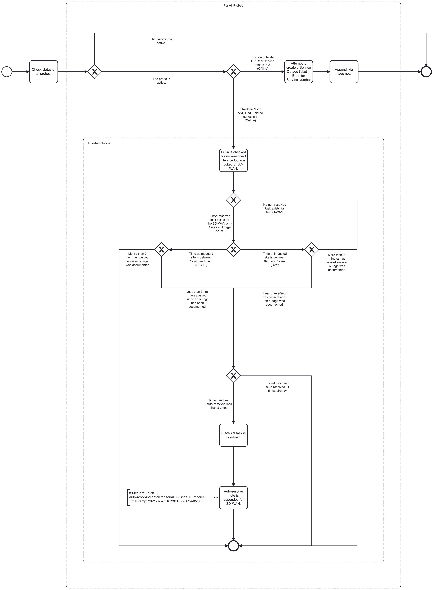

Ixia Outage Monitoring Event Logging
Process Workflows

List of Decisions made by the Ixia outage monitoring System
Ixia outage monitoring queue
Start of Ixia outage monitoring workflow
| 1. Checking probe status | The probe is not active | The probe is active |
| 2. Check Node to Node and Real service status | Node to Node or Real service status is 0 (Offline) | Node to Node AND Real status is 1 (Online) |
| 3. Checking for non-resolved task for Service Outage ticket | A non-resolved task exists for the SD-WAN on a Service Outage ticket | No non-resolved task exists for the SD-WAN on a Service Outage ticket |
| 4. Checking for time at impacted site | Time at impacted site is between 12am and 6am (NIGHT) | Time at impacted site is between 6am and 12am (DAY) |
| 5. Checking if time passed is more or less than 3 hrs | More than 3 hours has passed since an outage was documented | Less than 3 hours has passed since an outage was documented |
| 6. Checking if time passed is more or less than 90 mins | More than 90 mins has passed since an outage was documented | Less than 90 mins has passed since an outage was documented |
| 7. Checking how mamy time ticket has been autoresolved | Ticket has been autoresolved less than 3 times | Ticket has been autoresolved more than 3 times |
| ## Event Descriptions | ||
| ### Ixia outage monitoring queue | ||
| * start_hawkeye_outage_monitoring |